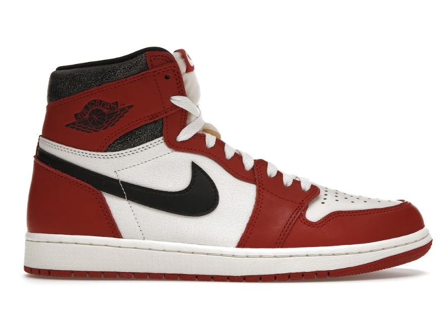
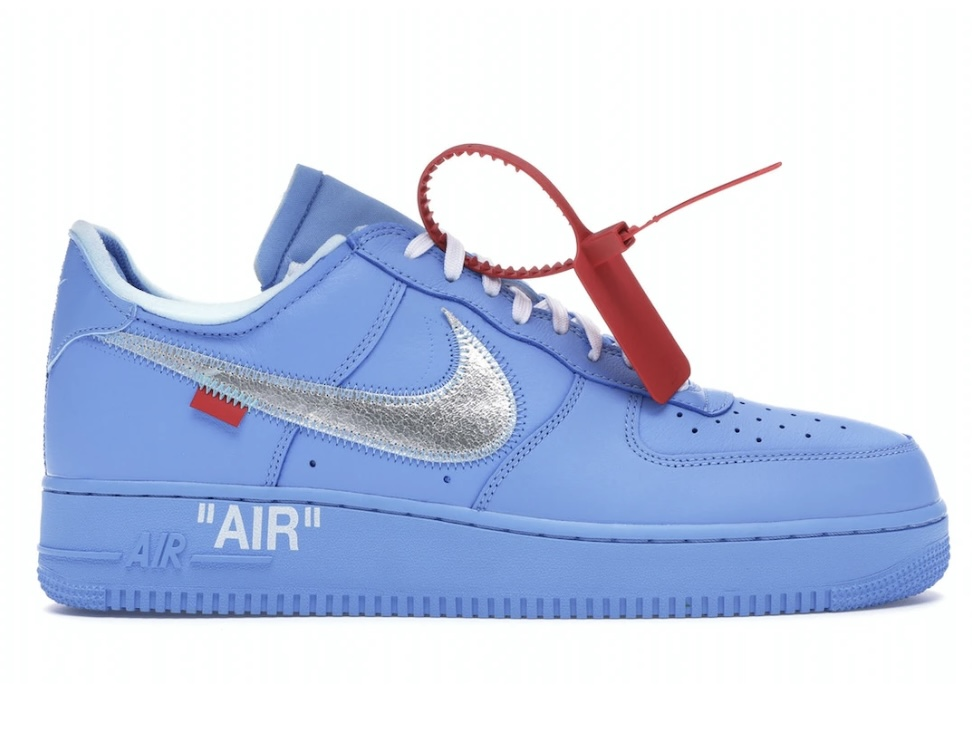
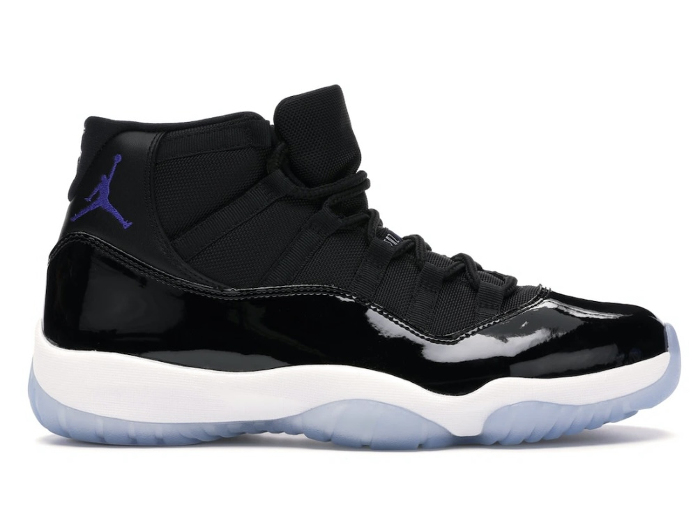
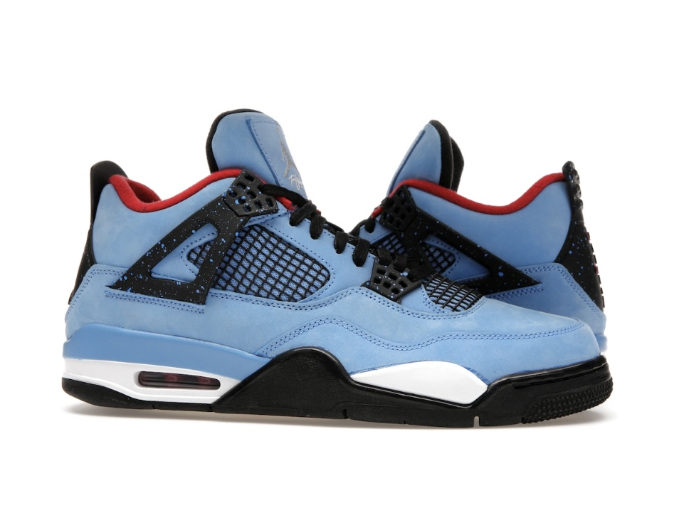
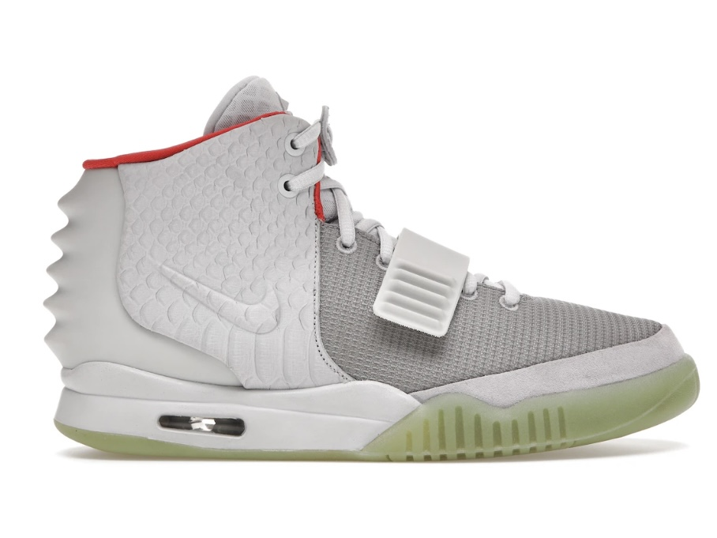
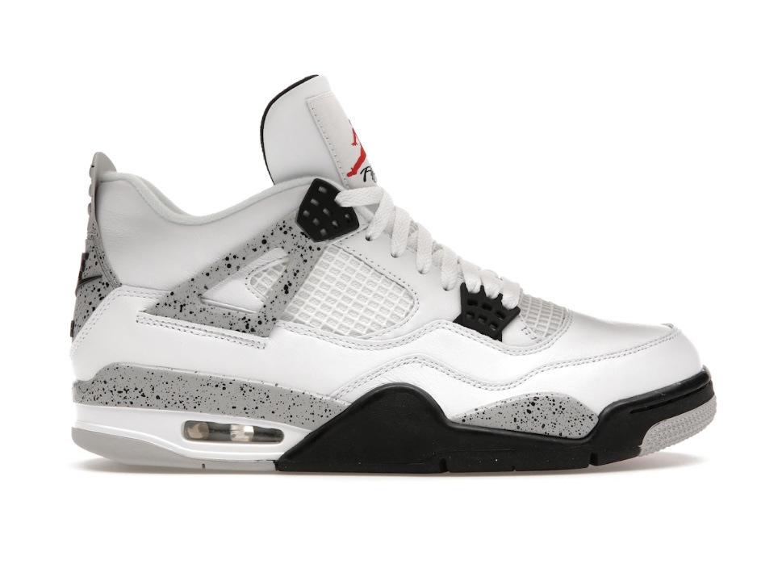

Sneakers You Wont Find Anywhere Else

Air Jordan 1 "Chicago"
- Order Number-7563317
- Color - Red/White
- Available in sizes: 9-12
- The Air Jordan 1 “Chicago” is a classic and highly sought after model bearing a fierce red and white color way representing Jordans team, the Chicago Bulls.

Air Force 1 "Off-White"
- Order Number-7107227
- Color - Blue
- Available in sizes 7-13
- The Air Force 1 are one of Nike's most successful pairs which collaborate with late Virgil Abloh. Many are familiar with his trademark zip-tie-tag and words in quotes.

Air Jordan 11 "Space Jam"
- Order Number-7563487
- Color - Black
- Available in sizes 9-12
- The Air Jordan 11 “Space Jam” is one of the most infamous models in the Air Jordan line. This specific color way was worn by Jordan in his movie, Space Jam.

Air Jordan 4 "Travis Scott"
- Order Number-7509327
- Color - Blue/Black
- Available in sizes 5-11
- The Air Jordan 4 “Travis Scott” is a collaboration edition of a classic model with rapper Travis Scott, who is signed to the Jordan brand.

Nike Yeezy "Pure Platinum"
- Order Number-7560337
- Color - Platinum/Red
- Available in sizes 6-12
- The Nike Air Yeezy “Pure Platinum” was a signature sneaker made for rapper Kanye West who is now signed to Adidas. This shoe is no longer sold.

Air Jordan 4 "White Cement"
- Order Number-7350437
- Color - White/Black
- Available in sizes 4-17
- The Air Jordan 4 “White Cement” is a classic model from the Jordan brand featuring black speckles across the signature toe tag and accents of the shoe.